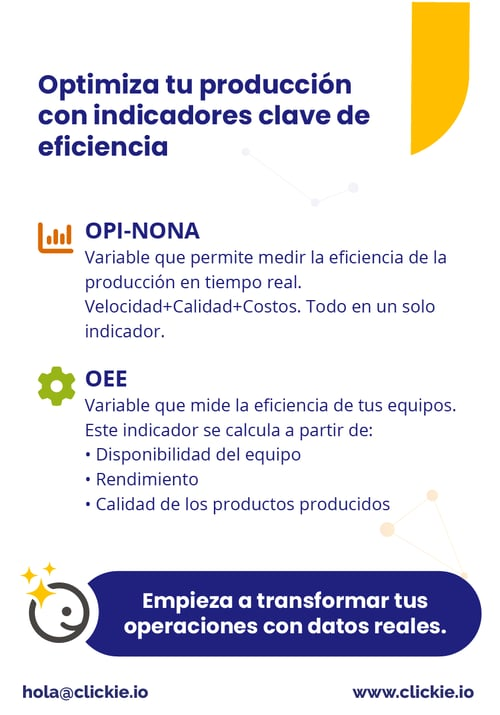

En producción, mejorar no depende solo de fabricar más. Depende de entender mejor qué está pasando en la línea, dónde se están generando pérdidas y qué decisiones permiten corregirlas a tiempo. Ahí la diferencia está en medir de forma inteligente.
Cuando una operación empieza a trabajar con indicadores como OPI-NONA y OEE, la conversación deja de girar solo en torno al volumen producido y empieza a enfocarse en desempeño real.
Qué aporta OPI-NONA
OPI-NONA permite observar el desempeño de la producción en tiempo real combinando variables como:
- Velocidad
- Calidad
- Costo
Eso ayuda a detectar rápidamente cuándo una línea empieza a desviarse de su comportamiento esperado y a reaccionar antes de que el problema crezca.
Qué aporta OEE
OEE mide la efectividad de los equipos a partir de tres dimensiones clave:
- Disponibilidad
- Rendimiento
- Calidad
Con esa combinación, la operación puede identificar cuellos de botella, tiempos muertos y oportunidades claras de mejora en equipos críticos.
La capa que falta: energía por equipo
Cuando además se mide el consumo energético por equipo o por línea, el análisis gana una dimensión mucho más útil. Ya no se ve solo cuánto se produce, sino también a qué costo energético se está produciendo.
Esa lectura permite conectar eficiencia productiva con eficiencia energética, algo especialmente valioso en operaciones donde el margen depende de ambos frentes.
- Ayuda a tomar decisiones más rápidas.
- Permite anticipar problemas operativos.
- Reduce desperdicio y costo por unidad producida.
- Mejora el control en tiempo real.

En Clickie ayudamos a transformar ese cruce entre producción y energía en información accionable para la operación diaria.
Descubre cómo medir mejor tu línea de producción o escríbenos a hola@clickie.io.